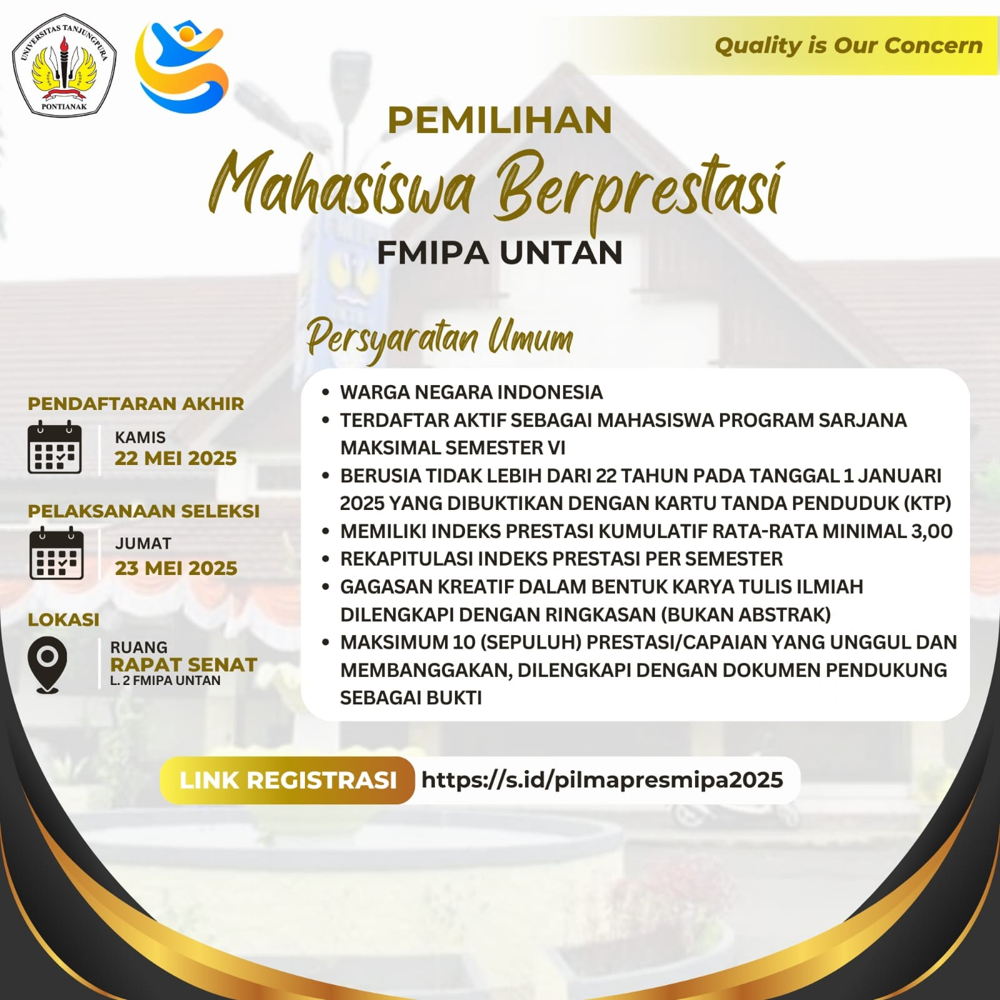
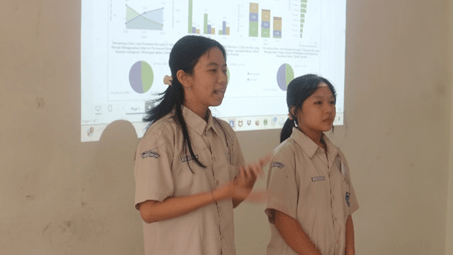

WEBSITE RESMI
Menjadi institusi unggul dalam transformasi, pengembangan dan penyebarluasan sains dan teknologi.
Jelajahi Program StudiTentang FMIPA UNTAN
Mengenal lebih dekat Fakultas Matematika dan Ilmu Pengetahuan Alam.
Sambutan Dekan & Visi
"Assalaamu’alaikum wr. wb.
Selamat datang di website resmi Fakultas Matematika dan Ilmu Pengetahuan Alam Universitas Tanjungpura (FMIPA Untan) Pontianak. Pada awal berdirinya tahun 2002, FMIPA Untan bernama Fakultas Matematika dan Ilmu Pengetahuan Alam (Persiapan). Ketika pertama kali menerima mahasiswa pada tahun akademik 2002/2003 , FMIPA Untan menyelenggarakan proses pembelajaran pada empat program studi jenjang S-1 yaitu Matematika, Fisika, Kimia, dan Biologi. Saat ini FMIPA Untan menyelenggarakan sembilan program studi jenjang S-1 (Matematika, Fisika, Kimia, Biologi, Rekayasa Sistem Komputer, Ilmu Kelautan, Sistem Informasi, Statistik, Geofisika). dan satu program studi jenjang S-2 (Kimia)."Website resmi FMIPA Universitas Tanjungpura
Baca Visi Misi Lengkap →Sejarah Singkat
Pendirian Fakultas Matematika dan Ilmu Pengetahuan Alam Universitas Tanjungpura dipelopori oleh Rektor UNTAN periode 1982-1991 (Prof. Dr. H. Hadari Nawawi) dan diawali dengan dibentuknya Badan Pengelola Matematika dan Ilmu Pengetahuan Alam (BP. MIPA) Untan pada tahun 1992 berdasarkan Surat Keputusan Rektor Universitas Tanjungpura Nomor:4669/PT29.H/E/1992, tanggal 26 November 1992. Sejarah Lengkap →
Statistik Jumlah Mahasiswa (Data Per Tahun)
Distribusi Mahasiswa Baru 2025/2026 (Klik pada potongan diagram untuk ke Website Prodi)
Jelajahi Program Studi Kami
Total 10 Program Studi (9 S1, 1 S2) di FMIPA UNTAN.


Berita & Pengumuman Terbaru
Informasi terkini dari lingkungan FMIPA UNTAN.

Pemilihan Mahasiswa Berprestasi (Pilmapres) FMIPA UNTAN 2025
16 Mei 2025 KEMAHASISWAAN

Statistics Competition 2025 : Bersaing Dengan Visualisasi Statistik
Prodi Statistika
Kuliah Umum Prodi Sistem Informasi “TA Gak Toxic Lagi ( Healing Bareng Depth Therapist Biar Skripsi Approve Tanpa Overthinking ) ” 14 November 2025 Prodi Sistem Informasi
Hubungi Kami
Lokasi Fakultas Matematika dan Ilmu Pengetahuan Alam Universitas Tanjungpura
Informasi Kontak Resmi
Alamat
JL. Prof. Dr. H. Hadari Nawawi – Kode Pos: 78124, Pontianak.
JL. Prof. Dr. H. Hadari Nawawi – Kode Pos: 78124, Pontianak.
Telepon
(0561) 577963
(0561) 577963
Email
info@fmipa.untan.ac.id
info@fmipa.untan.ac.id
Website
mipa.untan.ac.id
mipa.untan.ac.id